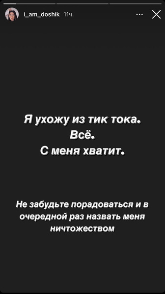

Дата публикации 04.02.2024
«С меня хватит»: почему Даша Дошик решила уйти из TikTok? 💔
Вот и Даша Дошик опубликовала в Instagram (запрещенная в России экстремистская организация)
что решила уйти из TikTok из-за постоянного хейта и оскорблений в свою сторону. Как же так? 💔
